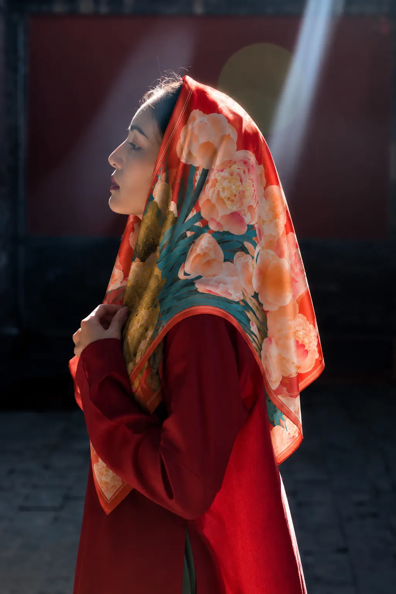
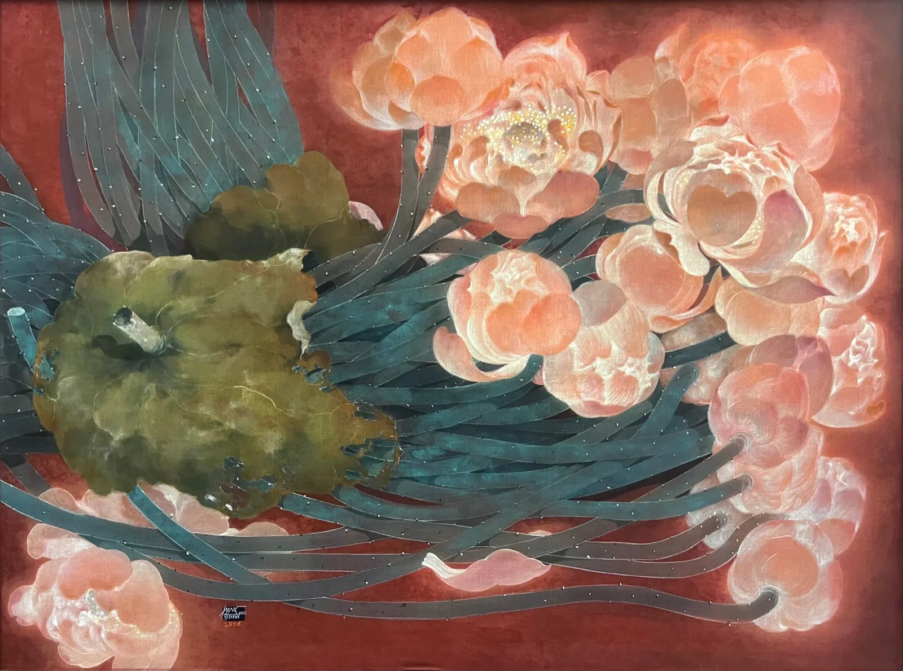
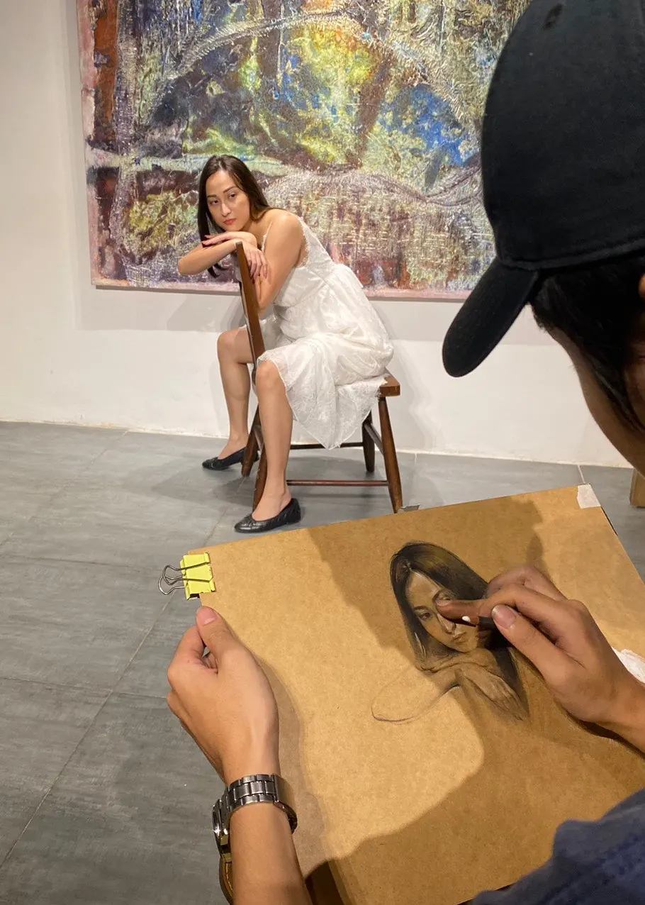

LUMIERE
ARTSHội họa đương đại Việt Nam.
Trên lụa. Trong đời sống.
Tuyển chọn tác phẩm
Nguyễn Văn Trinh, 2023-2026.
Tác phẩm
tuyển chọn.
Màu nước trên lụa. Mỗi tác phẩm được vẽ bằng tay, có chữ ký nghệ sĩ và chứng nhận xác thực.
06 TÁC PHẨMBạn đang tìm một tác phẩm khác?
Xem danh mục đầy đủHỘI HỌA / NGHỆ THUẬT ĐỂ MẶC
Lụa,
chuyển động.
Hoa sen bước ra khỏi bức tranh. Hội họa của Nguyễn Văn Trinh mang một hình hài khác trên khăn lụa tự nhiên, in và hoàn thiện thủ công.



Màu sắc, hình dáng, chuyển động.
Một cách khác để sống cùng hội họa.
Nguyễn
Văn Trinh
SINH NĂM 1991 / VIỆT NAM
Nguyễn Văn Trinh gắn bó với lụa từ những năm đầu học vẽ. Thực hành của anh đi qua màu nước, nhuộm sâu và những thử nghiệm trên bề mặt chất liệu.
Vùng sống và Thủy tinh hóa là hai mạch sáng tác được phát triển từ ký ức, thiên nhiên và những cảnh quan tưởng tượng.
- 2024
- Giải Vàng, Nghệ sĩ triển vọng
UOB Painting of the Year - 2025
- 20 tác phẩm lụa đặt riêng
Dusit Le Palais Từ Hoa Hanoi
Không chiếc
nào giống nhau.
Bột giấy Giang và đất mịn. Tạo hình, vẽ và hoàn thiện thủ công, mỗi tượng ngựa giữ lại những bất đối xứng nhỏ của quá trình làm bằng tay.
Xem vật phẩm nghệ thuật
Ghé thăm.
Imperia Sky Garden
423 Minh Khai, Hà Nội, Việt Nam